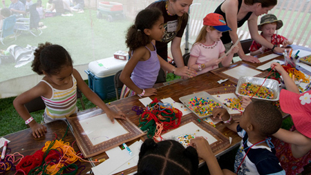

ChicagoVeg Families & Kids
Our community supports vegetarian and vegan families with kids. We also welcome non-veg families who are interested in the veg lifestyle. We strive to create a growing network of families who live in Chicago and the suburbs. Here we will build friendships, share advice and support our families' journeys! As parents, we want to guide our children to eat nourishing foods, act compassionately towards others, and/or be thoughtful about the Earth. ChicagoVeg Kids is where veg kids are the norm, not the exception.
Please join us if you live in Chicago or the suburbs: Meetup.com/ChicagoVegKids.